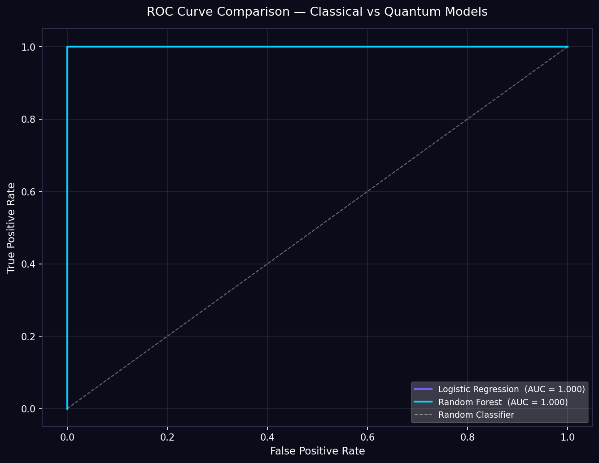

—
Gene Expression Samples
A hybrid Quantum–Classical ML pipeline detecting early-stage leukemia (ALL vs AML) using Qiskit VQC, QSVM, PennyLane QNN, and classical baselines on gene expression data.
Enter your Complete Blood Count (CBC) values for AI-powered early-stage leukemia risk assessment
Enter values from your latest blood test report
Enter CBC values and click Analyze Risk to get your quantum-powered risk assessment.
Running quantum + classical analysis...
Head-to-head performance on the OpenML Leukemia dataset (ALL vs AML, 72 samples, 7129 genes)
| Model | Type | Accuracy | Precision | Recall | F1 Score | ROC-AUC |
|---|


SHAP (SHapley Additive exPlanations) values reveal which genetic features drive each prediction

SHAP uses Shapley values from cooperative game theory to fairly distribute prediction credit among features.
Applied to our Random Forest model to compute exact SHAP values for each gene's contribution.
High-importance genes may represent known oncogenes or tumor suppressors relevant to ALL/AML differentiation.
Three quantum strategies compared on the same 4-qubit feature space
End-to-end quantum–classical machine learning workflow
OpenML Leukemia dataset — 72 patient samples, 7129 gene expression features (ALL vs AML)
QuantileTransformer → SelectKBest (ANOVA F-test) → PCA reduction to 4 quantum features
Angle encoding maps PCA features to qubit rotations [0, 2π] via ZZFeatureMap / AngleEmbedding
5 classical + 3 quantum models trained on Qiskit Aer statevector simulator
Accuracy, F1, ROC-AUC metrics · SHAP gene importance · Confusion matrices
CBC-based risk model provides patient-facing early-stage leukemia risk scores